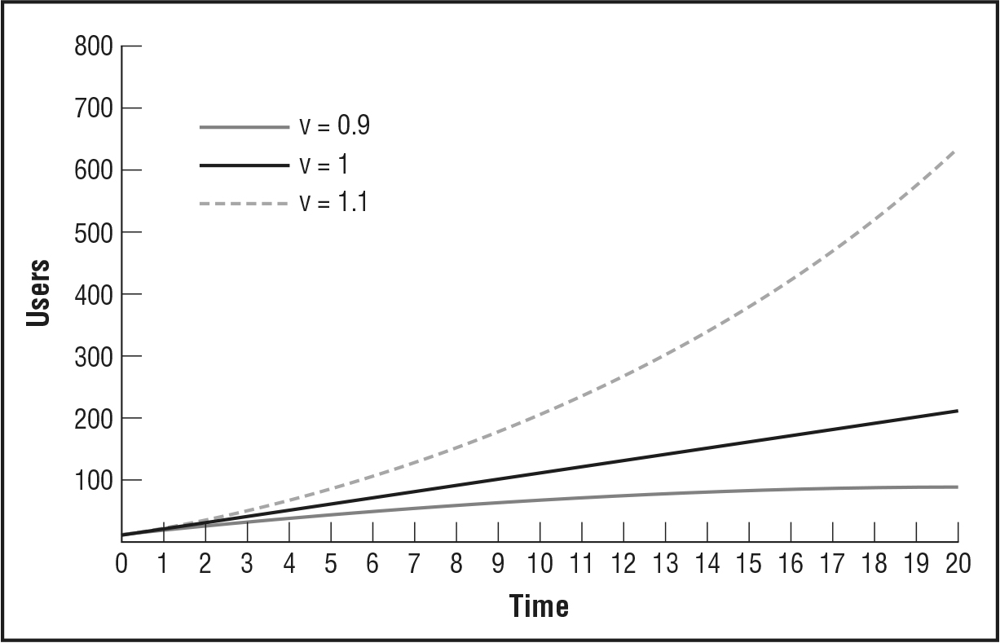

We saw in Part Two how important it is for startups to use the right kind of metrics—actionable metrics—to evaluate their progress. However, this leaves a large amount of variety in terms of which numbers one should measure. In fact, one of the most expensive forms of potential waste for a startup is spending time arguing about how to prioritize new development once it has a product on the market. At any time, the company could invest its energy in finding new customers, servicing existing customers better, improving overall quality, or driving down costs. In my experience, the discussions about these kinds of priority decisions can consume a substantial fraction of the company’s time.
Engines of growth are designed to give startups a relatively small set of metrics on which to focus their energies. As one of my mentors, the venture capital investor Shawn Carolan, put it, “Startups don’t starve; they drown.” There are always a zillion new ideas about how to make the product better floating around, but the hard truth is that most of those ideas make a difference only at the margins. They are mere optimizations. Startups have to focus on the big experiments that lead to validated learning. The engines of growth framework helps them stay focused on the metrics that matter.
This brings us back to the two startups that kicked off this chapter. Both are using the exact same engine of growth despite being in very different industries. Both products are designed to attract and retain customers for the long term. The underlying mechanism of that retention is different in the two cases. For the collectible company, the idea is to become the number one shopping destination for fanatical collectors. These are people who are constantly hunting for the latest items and the best deals. If the company’s product works as designed, collectors who start using it will check constantly and repeatedly to see if new items are for sale as well as listing their own items for sale or trade.
The startup database vendor relies on repeat usage for a very different reason. Database technology is used only as the foundation for a customer’s own products, such as a website or a point of sale system. Once you build a product on top of a particular database technology, it is extremely difficult to switch. In the IT industry, such customers are said to be locked in to the vendor they choose. For such a product to grow, it has to offer such a compelling new capability that customers are willing to risk being tied to a proprietary vendor for a potentially long time.
Thus, both businesses rely on having a high customer retention rate. They have an expectation that once you start using their product, you will continue to do so. This is the same dynamic as a mobile telephone service provider: when a customer cancels his or her service, it generally means that he or she is extremely dissatisfied or is switching to a competitor’s product. This is in contrast to, say, groceries on a store aisle. In the grocery retail business, customer tastes fluctuate, and if a customer buys a Pepsi this week instead of Coke, it’s not necessarily a big deal.
Therefore, companies using the sticky engine of growth track their attrition rate or churn rate very carefully. The churn rate is defined as the fraction of customers in any period who fail to remain engaged with the company’s product.
The rules that govern the sticky engine of growth are pretty simple: if the rate of new customer acquisition exceeds the churn rate, the product will grow. The speed of growth is determined by what I call the rate of compounding, which is simply the natural growth rate minus the churn rate. Like a bank account that earns compounding interest, having a high rate of compounding will lead to extremely rapid growth—without advertising, viral growth, or publicity stunts.
Unfortunately, both of these sticky startups were tracking their progress using generic indicators such as the total number of customers. Even the actionable metrics they were using, such as the activation rate and revenue per customer, weren’t very helpful because in the sticky engine of growth, these variables have little impact on growth. (In the sticky engine of growth, they are better suited to testing the value hypothesis that was discussed in Chapter 5.)
After our meeting, one of the two startups took me up on my advice to model its customer behavior by using the sticky engine of growth as a template. The results were striking: a 61 percent retention rate and a 39 percent growth rate of new customers. In other words, its churn rate and new customer acquisition balanced each other almost perfectly, leading to a compounding growth rate of just 0.02 percent—almost zero.
This is typical for companies in an engagement business that are struggling to find growth. An insider who worked at the dot-com-era company PointCast once showed me how that company suffered a similar dysfunction. When PointCast was struggling to grow, it was nonetheless incredibly successful in new customer acquisition—just like this sticky startup (39 percent every period). Unfortunately, this growth is being offset by an equivalent amount of churn. Once it is modeled this way, the good news should be apparent: there are plenty of new customers coming in the door. The way to find growth is to focus on existing customers for the product to become even more engaging to them. For example, the company could focus on getting more and better listings. This would create an incentive for customers to check back often. Alternatively, the company could do something more direct such as messaging them about limited-time sales or special offers. Either way, its focus needs to be on improving customer retention. This goes against the standard intuition in that if a company lacks growth, it should invest more in sales and marketing. This counterintuitive result is hard to infer from standard vanity metrics.
Online social networks and Tupperware are examples of products for which customers do the lion’s share of the marketing. Awareness of the product spreads rapidly from person to person similarly to the way a virus becomes an epidemic. This is distinct from the simple word-of-mouth growth discussed above. Instead, products that exhibit viral growth depend on person-to-person transmission as a necessary consequence of normal product use. Customers are not intentionally acting as evangelists; they are not necessarily trying to spread the word about the product. Growth happens automatically as a side effect of customers using the product. Viruses are not optional.
For example, one of the most famous viral success stories is a company called Hotmail. In 1996, Sabeer Bhatia and Jack Smith launched a new web-based e-mail service that offered customers free accounts. At first, growth was sluggish; with only a small seed investment from the venture capital firm Draper Fisher Jurvetson, the Hotmail team could not afford an extensive marketing campaign. But everything changed when they made one small tweak to the product. They added to the bottom of every single e-mail the message “P.S. Get your free e-mail at Hotmail” along with a clickable link.
Within weeks, that small product change produced massive results. Within six months, Bhatia and Smith had signed up more than 1 million new customers. Five weeks later, they hit the 2 million mark. Eighteen months after launching the service, with 12 million subscribers, they sold the company to Microsoft for $400 million.1
The same phenomenon is at work in Tupperware’s famous “house parties,” in which customers earn commissions by selling the product to their friends and neighbors. Every sales pitch is an opportunity not only to sell Tupperware products but also to persuade other customers to become Tupperware representatives. Tupperware parties are still going strong decades after they started. Many other contemporary companies, such as Pampered Chef (owned by Warren Buffett’s Berkshire Hathaway), Southern Living, and Tastefully Simple, have adopted a similar model successfully.
Like the other engines of growth, the viral engine is powered by a feedback loop that can be quantified. It is called the viral loop, and its speed is determined by a single mathematical term called the viral coefficient. The higher this coefficient is, the faster the product will spread. The viral coefficient measures how many new customers will use a product as a consequence of each new customer who signs up. Put another way, how many friends will each customer bring with him or her? Since each friend is also a new customer, he or she has an opportunity to recruit yet more friends.
For a product with a viral coefficient of 0.1, one in every ten customers will recruit one of his or her friends. This is not a sustainable loop. Imagine that one hundred customers sign up. They will cause ten friends to sign up. Those ten friends will cause one additional person to sign up, but there the loop will fizzle out.
By contrast, a viral loop with a coefficient that is greater than 1.0 will grow exponentially, because each person who signs up will bring, on average, more than one other person with him or her.
To see these effects graphically, take a look at this chart:

Companies that rely on the viral engine of growth must focus on increasing the viral coefficient more than anything else, because even tiny changes in this number will cause dramatic changes in their future prospects.
A consequence of this is that many viral products do not charge customers directly but rely on indirect sources of revenue such as advertising. This is the case because viral products cannot afford to have any friction impede the process of signing customers up and recruiting their friends. This can make testing the value hypothesis for viral products especially challenging.
The true test of the value hypothesis is always a voluntary exchange of value between customers and the startup that serves them. A lot of confusion stems from the fact that this exchange can be monetary, as in the case of Tupperware, or nonmonetary, as in the case of Facebook. In the viral engine of growth, monetary exchange does not drive new growth; it is useful only as an indicator that customers value the product enough to pay for it. If Facebook or Hotmail had started charging customers in their early days, it would have been foolish, as it would have impeded their ability to grow. However, it is not true that customers do not give these companies something of value: by investing their time and attention in the product, they make the product valuable to advertisers. Companies that sell advertising actually serve two different groups of customers—consumers and advertisers—and exchange a different currency of value with each.2
This is markedly different from companies that actively use money to fuel their expansion, such as a retail chain that can grow as fast as it can fund the opening of new stores at suitable locations. These companies are using a different engine of growth altogether.
Imagine another pair of businesses. The first makes $1 on each customer it signs up; the second makes $100,000 from each customer it signs up. To predict which company will grow faster, you need to know only one additional thing: how much it costs to sign up a new customer.
Imagine that the first company uses Google AdWords to find new customers online and pays an average of 80 cents each time a new customer joins. The second company sells heavy goods to large companies. Each sale requires a significant time investment from a salesperson and on-site sales engineering to help install the product; these hard costs total up to $80,000 per new customer. Both companies will grow at the exact same rate. Each has the same proportion of revenue (20 percent) available to reinvest in new customer acquisition. If either company wants to increase its rate of growth, it can do so in one of two ways: increase the revenue from each customer or drive down the cost of acquiring a new customer.
That’s the paid engine of growth at work.
In relating the IMVU story in Chapter 3, I talked about how we made a major early mistake in setting up the IMVU strategy. We ultimately wound up having to make an engine of growth pivot. We originally thought that our IM add-on strategy would allow the product to grow virally. Unfortunately, customers refused to go along with our brilliant strategy.
Our basic misconception was a belief that customers would be willing to use IMVU as an add-on to existing instant messaging networks. We believed that the product would spread virally through those networks, passed from customer to customer. The problem with that theory is that some kinds of products are not compatible with viral growth.
IMVU’s customers didn’t want to use the product with their existing friends. They wanted to use it to make new friends. Unfortunately, that meant they did not have a strong incentive to bring new customers to the product; they viewed that as our job. Fortunately, IMVU was able to grow by using paid advertising because our customers were willing to pay more for our product than it cost us to reach them via advertising.
Like the other engines, the paid engine of growth is powered by a feedback loop. Each customer pays a certain amount of money for the product over his or her “lifetime” as a customer. Once variable costs are deducted, this usually is called the customer lifetime value (LTV). This revenue can be invested in growth by buying advertising.
Suppose an advertisement costs $100 and causes fifty new customers to sign up for the service. This ad has a cost per acquisition (CPA) of $2.00. In this example, if the product has an LTV that is greater than $2, the product will grow. The margin between the LTV and the CPA determines how fast the paid engine of growth will turn (this is called the marginal profit). Conversely, if the CPA remains at $2.00 but the LTV falls below $2.00, the company’s growth will slow. It may make up the difference with one-time tactics such as using invested capital or publicity stunts, but those tactics are not sustainable. This was the fate of many failed companies, including notable dot-com flameouts that erroneously believed that they could lose money on each customer but, as the old joke goes, make it up in volume.
Although I have explained the paid engine of growth in terms of advertising, it is far broader than that. Startups that employ an outbound sales force are also using this engine, as are retail companies that rely on foot traffic. All these costs should be factored into the cost per acquisition.
For example, one startup I worked with built collaboration tools for teams and groups. It went through a radical pivot, switching from a tool that was used primarily by hobbyists and small clubs to one that was sold primarily to enterprises, nongovernmental organizations (NGOs), and other extremely large organizations. However, they made that customer segment pivot without changing their engine of growth. Previously, they had done customer acquisition online, using web-based direct marketing techniques. I remember one early situation in which the company fielded a call from a major NGO that wanted to buy its product and roll it out across many divisions. The startup had an “unlimited” pricing plan, its most expensive, that cost only a few hundred dollars per month. The NGO literally could not make the purchase because it had no process in place for buying something so inexpensive. Additionally, the NGO needed substantial help in managing the rollout, educating its staff on the new tool, and tracking the impact of the change; those were all services the company was ill equipped to offer. Changing customer segments required them to switch to hiring a sizable outbound sales staff that spent time attending conferences, educating executives, and authoring white papers. Those much higher costs came with a corresponding reward: the company switched from making only a few dollars per customer to making tens and then hundreds of thousands of dollars per much larger customer. Their new engine of growth led to sustained success.
Most sources of customer acquisition are subject to competition. For example, prime retail storefronts have more foot traffic and are therefore more valuable. Similarly, advertising that is targeted to more affluent customers generally costs more than advertising that reaches the general public. What determines these prices is the average value earned in aggregate by the companies that are in competition for any given customer’s attention. Wealthy consumers cost more to reach because they tend to become more profitable customers.
Over time, any source of customer acquisition will tend to have its CPA bid up by this competition. If everyone in an industry makes the same amount of money on each sale, they all will wind up paying most of their marginal profit to the source of acquisition. Thus, the ability to grow in the long term by using the paid engine requires a differentiated ability to monetize a certain set of customers.
IMVU is a case in point. Our customers were not considered very lucrative by other online services: they included a lot of teenagers, low-income adults, and international customers. Other services tended to assume those people would not pay for anything online. At IMVU, we developed techniques for collecting online payments from customers who did not have a credit card, such as allowing them to bill to their mobile phones or send us cash in the mail. Therefore, we could afford to pay more to acquire those customers than our competitors could.
Technically, more than one engine of growth can operate in a business at a time. For example, there are products that have extremely fast viral growth as well as extremely low customer churn rates. Also, there is no reason why a product cannot have both high margins and high retention. However, in my experience, successful startups usually focus on just one engine of growth, specializing in everything that is required to make it work. Companies that attempt to build a dashboard that includes all three engines tend to cause a lot of confusion because the operations expertise required to model all these effects simultaneously is quite complicated. Therefore, I strongly recommend that startups focus on one engine at a time. Most entrepreneurs already have a strong leap-of-faith hypothesis about which engine is most likely to work. If they do not, time spent out of the building with customers will quickly suggest one that seems profitable. Only after pursuing one engine thoroughly should a startup consider a pivot to one of the others.